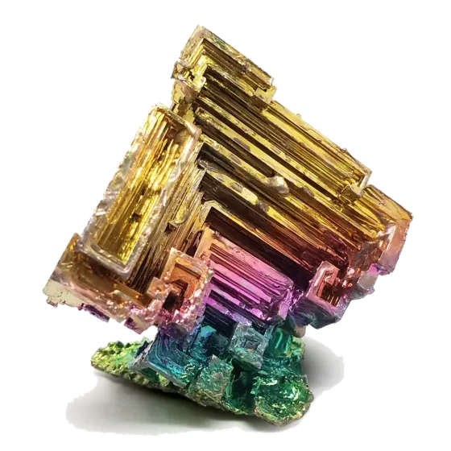

Mineral Grimoire
 Bismuth
Bismuth
Bismuth's Journey to You
Bismuth is a metalloid rather than a traditional gemstone, and a pure element on the periodic table, one of the first ten metals ever identified by humans. Its extraordinary rainbow coloring is not inherent to the metal itself, which is silver-white at its core, but rather the result of a thin layer of oxidation on its surface. The striking, highly geometric specimens found for sale are almost always laboratory-grown, produced by melting bismuth down and drawing the liquid metal upward on a rod, where it crystallizes into its characteristic staircase formations as it cools. Naturally occurring bismuth in this form exists, but it is exceptionally rare. As a stone of transformation, bismuth can transmit and channel multiple energetic frequencies simultaneously, offering access to the information and wisdom you are seeking.
Crystal Healing with Bismuth
Unlike most stones, which move energy upward from the Root Chakra to invigorate the full body, bismuth reverses this flow. It draws energy downward from the Crown Chakra through the central energy meridian to the Root, translating divine wisdom into practical, grounded action. Placing bismuth on the Crown, the Root, or both supports this process most directly. When positioned on the Solar Plexus Chakra, bismuth may help reduce fever and ease digestive complaints such as acid reflux or ulcers as a complement to regular medical care. It can also be placed in shared spaces where meetings, collaboration, or creative brainstorming will take place, helping to foster an atmosphere of peace, clear communication, and genuine connection.
For the Beginner
- Introduces structure, direction, and a sense of order into areas of your life that have felt scattered or unfocused.
- Helps you build practical frameworks for moving your ideas from concept into tangible reality.
- Encourages self-reflection while simultaneously calming the emotions and quieting the mind, allowing logic to guide you even when exploring deeply esoteric territory.
For the Advanced Practitioner
Bismuth functions as an energetic transmitter and reservoir, capable of absorbing and storing a frequency and releasing it back when called upon. If you meditate with bismuth during a period of heightened joy, clarity, or inspiration, it holds that resonance in trust, making it retrievable again when circumstances feel heavier or more demanding. It strengthens your sense of connection, both to the Divine and to the community around you, while simultaneously acting as a steadying force in chaotic or overwhelming environments, returning you to calm and inner serenity even when outer conditions resist it.
Bismuth's Magickal Message for You
"When you channel mystical guidance, I help you organize those concepts so they can be practically applied both to your own life and to your community. Open yourself to concepts beyond the earthly plane; together, we will make them a reality."
Partners Well With
Blue Kyanite, Citrine, Labradorite, Rutilated Quartz, Teal Fluorite
Did You Know?
Bismuth is twice as abundant as gold in Earth's crust. Its vivid rainbow surface colors are not the natural color of the metal itself, which is silver-white inside, but a byproduct of oxidation on the outer layer.